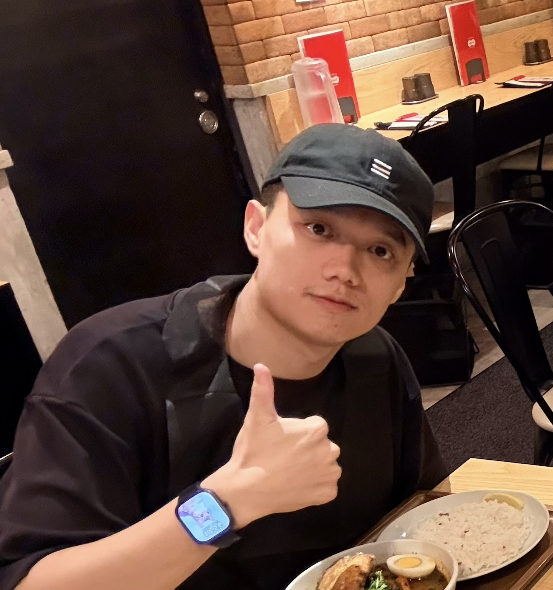

Hello, nice to meet you.
はじめまして、
卜 新哲 です。
自己紹介 / About
クラウドと AI を軸に、仕組みづくりからプロトタイプの実装までを手がけています。 I work across cloud and AI — from shaping systems to building working prototypes.

Hello, nice to meet you.
自己紹介 / About
クラウドと AI を軸に、仕組みづくりからプロトタイプの実装までを手がけています。 I work across cloud and AI — from shaping systems to building working prototypes.